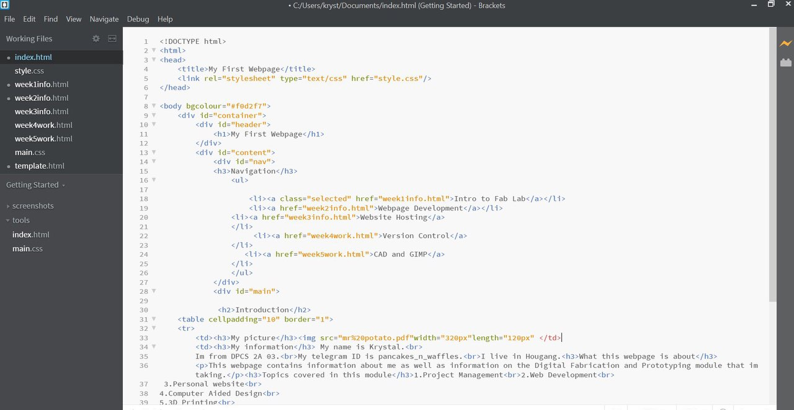

What we learnt :>
:> In week 1, we learnt about the different tools that were essential in everyones home. We were assigned to make a list of tools we thought were the most essential in terms of its cost, frequency of usage, as well as purposeMy work
1.Screwdriver
Purpose:-They are used for everything from putting together a piece of furniture, to removing light switch covers or tightening the knob on the kitchen cabinet door.
Cost:
-$15
Usage:
-quite frequently used in the household to maintain items
2. Measuring tape
Purpose:
-It is a must-have in every home when you need to measure windows for curtains, how high to hang a picture, or whether a certain couch will fit in that perfect spot in your living room.
Cost:
-$10.50
Usage:
-used quite often when purchasing new furniture
:> We also learnt abit about several software tools such as Fusion 360 and text editors such as Brackets, Atom, and Notepad++. We were then told to download Fusion 360 and a text editor of our choice (i chose to use brackets as i found the layout and presentation easier to understand!!)
:> Here's how Brackets look like!
